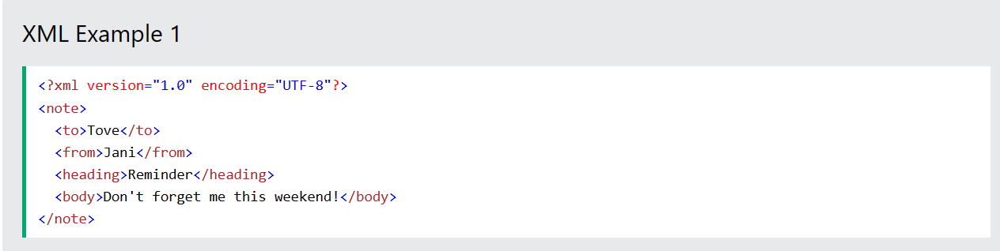

JS and More!
What is XML
XML (exctensive markup language) is a markup language designed to transfer or store data. XML is used to separate information from presentaztion with NO prefefined tags.
How is XML Used?
XML is used when developers need to create their own tags. When a developer needs to store context in data, XML would be the way to go. This language allows the creation of your own root elements and children of root elements and element nodes.
What Does XML Look Like?
Here is an example of an XML file below!

What Is JavaScript?
JavaScript is...
- An object-based, client-side scripting language.
- Really good at providing interactivity.
- Able to allow real-time content updates
How is JavaScript Related to HTML and CSS?
Javascript is related to HTML and CSS by it's ability of being interpreted by a web browser. This language is embedded in an HTML web page.
What are some common JavaScript elements, properties, methods, and functions?
- Element: The Script element is where JavaScript code is contained or encapsulated. This element can be coded in the head OR the body element.
- Property: Variables are JavaScript placeholders for data. They can hold numbers or strings and are declared with the "var" keyword.
- Method: The alert() method is used in a JavaScript command line to display an alert message box on a webpage. This method is used when you want to direct a users attention to something important.
- Function: Arithmatic operators canbe used by JavaScript to calculate and write down results of equations. Operators such as the "=" sign can also assign values to variables in JavaScript as well!